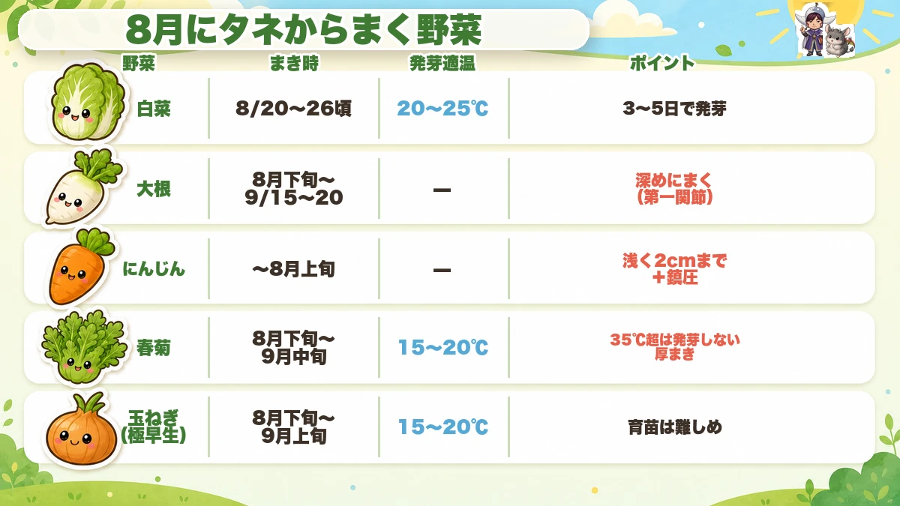
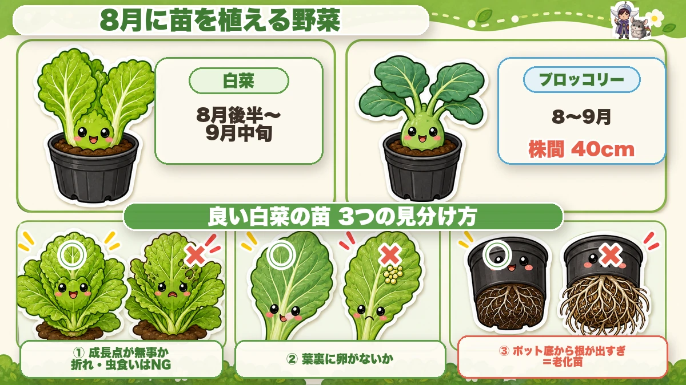
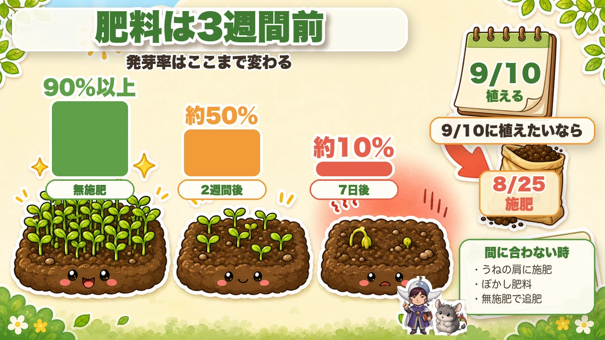

8月にまく・植える野菜｜白菜・大根・にんじんの夏まき・猛暑の種まきのコツ・秋じゃがいも
📖 この記事の目次
この記事で分かること
- 8月は、夏野菜から秋冬野菜へ切りかえる月です。夏野菜を長く引っぱりすぎると、秋冬野菜の種まきが遅れてしまいます。
- 白菜を種から育てるなら、8月後半、遅くとも9月前半が理想です。
- 大きな大根は9月の初めから中旬にまくので、8月のうちに畑の準備を進めます。
- 秋冬のにんじんは、7月下旬から8月中旬にまくと、11月下旬から12月ごろに収穫できます。
- 肥料を入れた直後に種をまくと、芽や根が傷みます。土づくりは、種まきの2〜3週間前までにすませます。
- 猛暑の種まきは、まく深さ・押さえ方・水・日よけ・防虫ネットの5つがポイントです。
お盆のころの畑は、まだまだ夏野菜が元気で、トマトやなす、ピーマンがとれ続けていますよね。「もう少しとれるから、片づけるのはもったいない」と思う気持ち、よく分かります。
でも実は、8月は秋冬野菜の準備が本格的に始まる月です。夏野菜を長く残しておくと、そのぶん秋冬野菜の種まきが遅れて、「大根が大きくならなかった」「白菜が巻かなかった」ということになりやすいんです。
安心してください。全部の夏野菜を一度に片づける必要はありません。この記事では、8月にまく・植える野菜と、それに向けた準備、そして猛暑の中で種をまくコツを、順番に書いていきます。
早見：8月の畑の基本（ひと目で分かる目安）
8月に種からまく野菜
- 白菜：8月後半、遅くとも9月前半
- 大根：大きな大根は9月初めから中旬。8月下旬からまける品種もある
- にんじん：7月下旬から8月中旬（8月上旬までにまくと安心）
- 春菊：8月下旬から9月
- キャベツ：早くとれる品種なら8月まきで年内収穫
- とうもろこし・いんげん：8月にまいて10月ごろ収穫する品種もある
8月に植える野菜
- ホーム玉ねぎ（小さな玉から育てる玉ねぎ）：8月中がぎりぎり
- 白菜の苗：8月後半から9月中旬
- ブロッコリーの苗：9月の初めごろ。とうもろこしのあとに植える場合は、その前に土づくり
- 秋じゃがいも：8月下旬から9月上旬ごろ
8月にやっておく準備
- 夏野菜の片づけの順番を決める
- 秋冬野菜を植える場所の土づくり（種まきの2〜3週間前まで）
- 太陽熱で土を消毒する
- 防虫ネットと寒冷紗（日よけ）を用意する

作業の手順
ここからは、8月の作業を順番に書いていきます。
8月の作業カレンダー（上旬・中旬・下旬）
- 上旬：にんじんの種まき。夏野菜の片づけの計画を立てる。片づけた場所から土づくりと太陽熱消毒
- 中旬：にんじんのまき残しを終える。お盆までに土づくりの大部分をすませる。防虫ネットや寒冷紗を準備
- 下旬：白菜の種まき。春菊の種まき。ホーム玉ねぎの植えつけ。秋じゃがいもの植えつけ準備。大根の畑の準備
お盆の前後は、暑さもいちばん厳しく、出かける予定も多い時期です。お盆までに準備を進めておくと、後半がぐっと楽になります。
手順1：夏野菜の片づけの順番を決める
8月は、夏野菜から秋冬野菜へのバトンタッチの月です。
夏野菜をいつまで残すか、どこから片づけるかを決めましょう。
- まず片づける：実のつきが悪くなったもの、病気が広がっているもの、株が弱ってきたもの（きゅうり、とうもろこしの収穫後など）
- 続いて片づける：秋冬野菜を早く植えたい場所にあるもの
- まだ残す：秋まで実をつけ続けるもの（なす、ピーマン、オクラなど）
秋冬野菜の中でも、白菜や大根のように、種まきや植えつけが遅れると大きくならない野菜を植える場所から、優先して空けていくのがコツです。
秋まで残す夏野菜の手入れ
なすやピーマン、オクラなど、秋まで残す夏野菜は、8月にひと手入れしておくと、秋にまたよくとれるようになります。
- なす：夏の暑さで株が疲れてくるころです。枝を切りもどして、株を休ませると、秋にもう一度つやのある実がつきやすくなります（更新剪定）
- ピーマン・ししとう：混みあった枝を整理して、風通しをよくします
- オクラ：とり遅れると実がかたくなるので、こまめに収穫を続けます
秋まで残す株にも、追肥をしておくと、最後までがんばってくれます。
手順2：土づくりは、種まきの2〜3週間前までに
秋冬野菜を植える場所が空いたら、土づくりをします。
ここで大事なのが、肥料を入れた直後に種をまかないことです。肥料、特に有機の肥料を入れると、土の中の微生物がそれを分解し始めます。そのタイミングで種をまくと、出てきたばかりの芽や新しい根まで影響を受けて、傷んでしまうことがあるんです。
ですから、土づくりは、種まきや植えつけの2〜3週間前までには終わらせておきます。種まきの日から逆算して、段取りを組んでおきましょう。
手順3：根菜は、肥料を控えめに
大根やにんじん、かぶなどの根菜は、まわりの土から養分を集める力が強い野菜です。夏野菜を育ててきた畑なら、前の肥料が残っていることが多いので、新しく肥料を入れなくても育つ、という説明もあります。
逆に、肥料が多すぎると、虫がつきやすくなったり、根が二股に分かれたりすることがあります。根菜を植える場所は、肥料を控えめにしておくと安心です。
ただし、初めて使う畑や、前の野菜が育ちにくかった畑では、肥料を入れたほうがいいこともあります。畑のこれまでの使い方に合わせて決めてください。
手順4：太陽熱で土を消毒する
真夏の強い日差しを利用して、土の中の虫や卵を減らす方法があります。「太陽熱消毒」と呼ばれています。
- 土を耕して、水をたっぷりまく
- 透明なビニールで、すき間なく覆う
- そのまま、晴れた日が続くあいだ置いておく
大根やかぶなど、アブラナ科の野菜は、育ち始めのころに、アブラムシやハムシ、シンクイムシなどの虫が多く出やすいです。土の中に潜んでいる卵や幼虫を、太陽の熱で蒸し焼きにしておくと、虫の数が減って、被害をおさえる効果が期待できます。
真夏の8月だからこそできる準備です。土づくりと合わせてやっておくと、9月の種まきがぐっと楽になります。
手順5：にんじんの種をまく
秋冬のにんじんは、7月下旬から8月中旬にまくと、11月下旬から12月中旬ごろに収穫できます。
にんじんは、芽を出させることができれば、7〜8割は成功と言われるほど、発芽が勝負の野菜です。そして、芽を出させるために絶対に欠かせないのが、水です。
- まく前に、畑をたっぷり湿らせておく
- 溝を作って、すじまきにする
- にんじんは光を好む種なので、土は5mmくらいと、ごく浅くかける
- まいたら、手のひらで押さえて、種と土をくっつける
- その上に、もみ殻や刈った草、不織布などをかけて、乾燥を防ぐ
芽が出たあとも、本葉が2〜3枚になるまでは安心できません。毎日のように土の湿り具合を見て、乾いていたら水をやってください。
手順6：白菜の種をまく
白菜は、お店で苗を買って植える方法もありますが、種から育てると、大玉の品種や、中が黄色い品種など、好みの品種を選べます。
種まきの時期は、8月後半、遅くとも9月前半が理想です。
- ポットやセルトレイに種をまいて、苗を作る
- 暑いので、風通しのよい半日陰で育てる
- 防虫ネットで囲んで、虫を防ぐ
- 本葉が4〜5枚になったら、畑に植える
白菜は、玉を巻く前に、外側の葉（外葉）をどれだけ大きく育てられるかが勝負です。寒くなる前に外葉を十分に広げるために、種まきは遅らせないようにしましょう。
白菜の品種の選び方
- 早生の品種：育つ日数が短く、早く収穫できる。種まきが少し遅れても間に合いやすい
- 中生・晩生の品種：じっくり育って、大きな玉になる。早めの種まきが必要
- ミニ白菜：小さめの玉で、育つ日数も短い。小さな畑や、食べきりサイズがほしい家庭向き
- 中が黄色い品種など、色や食感の違う品種：種から育てるからこそ選べる楽しみ
病気に強い品種も多いので、種袋の説明を見比べて選んでください。
手順7：大根の準備をする
大きくて長い大根は、冬の家庭菜園の楽しみの1つです。そういう大きくなる品種は、9月の初めから中旬に種をまくのが適期です。遅れると、冬までに大きく育ちません。
8月のうちに、大根を植える場所の土づくりをすませておきましょう。
- 深くまで耕して、石やかたいかたまりを取り除く
- 肥料は控えめに（前の肥料が残っている畑なら入れないことも）
- まく2〜3週間前までに準備を終える
一方、丸い形の大根や、小さめの品種なら、8月下旬からまいて、11月から12月に収穫できるものもあります。
大根の品種の選び方
- 青首大根：いちばん一般的で、育てやすい。煮物にもおろしにも
- 長くて太くなる品種：秋まきならではの大きな大根がとれる。9月初めまでにまく必要がある
- 丸い形の大根：根が短いので、土が浅い畑でも育てやすい。8月から9月にまけて、11月から12月、長ければ2月まで収穫できるものもある
- ミニ大根：小さめで、プランターでも育てられる
丸い大根やミニ大根は、暑さにはあまり強くないものもあるので、種袋で「秋まき」の時期を確かめてください。
にんじんの種の選び方
にんじんの種には、そのままの種と、まわりを粘土などで包んで粒を大きくした種（コート種子）があります。
- コート種子：粒が大きくて、1粒ずつまきやすい。ただし、まわりの膜が溶けないと芽が出ないので、夏は水をしっかり保つ必要がある
- そのままの種：膜がないぶん、水を吸いやすい。粒が小さいのでまきにくいが、多めにまいて間引けばいい
作業のしやすさならコート種子、夏の乾きやすさを考えるならそのままの種。それぞれによさがあります。
手順8：春菊の種をまく
春菊は、8月下旬から9月にかけてまけます。冬の定番の野菜で、寒さを防げば、年末から1〜2月まで収穫できます。鍋もの用にたくさんほしい方は、何回かに分けてまいておくと、冬のあいだ途切れずにとれます。
- 春菊は芽が出にくいことがあるので、種は多めにまく
- 土は、種が見えるくらいの浅さで、ごく薄くかける
- まいたら手で押さえる（水やりで種が流れにくくなる）
手順9：ホーム玉ねぎを植える
ホーム玉ねぎは、小さな玉ねぎ（セット球）を植えて、年内に新玉ねぎを収穫する育て方です。ふつうの玉ねぎは秋に苗を植えて翌年の初夏に収穫しますが、ホーム玉ねぎなら、冬のうちにみずみずしい新玉ねぎを味わえます。セット球は、とがった先が少し見えるくらいの浅さで植え、株の間は10〜15cmくらいあけます。
植えつけは、8月中がぎりぎりのタイミングです。9月に入ってから植えると、葉は育っても、大きな玉ねぎにはならないことが多いです。8月のうちに植えてしまいましょう。
手順10：変わりだねの種まき
8月にまける、ちょっと変わった野菜もあります。
- キャベツ：早くとれる品種なら、8月中にまいて11月から12月、つまり年内にやわらかいキャベツを収穫できる
- とうもろこし：8月中旬までにまいて10月に収穫する、という育て方ができる品種もある
- いんげん：つるなしの品種なら、8月にまいて秋に収穫できる
どれも、品種選びが大事です。種袋の「まきどき」の表に、8月の欄があるかを確かめてください。夏に育つぶん、虫にも気をつけてください。防虫ネットは必ずかけておきましょう。

キャベツを8月にまくなら
8月にまいて年内に収穫するキャベツは、早くとれる品種（極早生など）を選ぶのが前提です。どの品種でも8月にまけるわけではありません。
- ポットやセルトレイで苗を作り、半日陰で育てる
- 防虫ネットで囲んで、アオムシやコナガから守る
- 本葉が4〜5枚になったら畑に植える
冬に向かって育つキャベツは、葉がふわっとやわらかく、生で食べてもおいしいですよ。
手順11：白菜の苗を植える
白菜を苗から育てるなら、8月の後半から9月の中ごろに植えます。
- 株の間は、40〜45cmくらいあける
- 植えたら、すぐに防虫ネットをかける
- 暑い日が続くなら、寒冷紗などで日差しをやわらげる
- 根づくまで、朝か夕方にたっぷり水をやる
苗を買うときは、葉の色がよく、虫に食べられていないもの、株のまん中（成長点）が元気なものを選んでください。
手順12：ブロッコリーの苗を植える
ブロッコリーの苗は、9月の初めごろにホームセンターなどに並びます。
とうもろこしを収穫したあとの場所に植える場合は、収穫後に土づくりをして、3週間くらい寝かせてから植えると安心です。9月の初めに植えれば、11月下旬から12月ごろに収穫できます。
てっぺんのつぼみをとったあと、脇から小さなつぼみが次々出てくる品種を選ぶと、翌年まで長く収穫を楽しめます。

猛暑の種まき、5つのコツ
8月の種まきは、とにかく暑さとの勝負です。うまく芽を出させるためのコツを、5つにまとめました。
コツ1：まく深さを守る
- にんじん：5mmくらい。光を好む種なので、浅めに
- 大根：1cmくらい。光があると芽が出にくい種なので、しっかりかける
深くまきすぎると、芽が地上に出る前に力尽きてしまいます。浅すぎると、乾いてしまいます。野菜ごとの深さを守ってください。
コツ2：まいたら、しっかり押さえる
種をまいて土をかけたら、手のひらで押さえて、種と土をくっつけます（鎮圧）。
鎮圧が甘いと、種のまわりにすき間ができて、水を吸えずに芽が出にくくなります。猛暑で土が乾きやすい時期は、特にしっかり押さえてください。
コツ3：水の管理
種まきの前に、畑をしっかり湿らせておくのが基本です。まいたあとの水やりは、野菜によって考え方が違います（あとで書きます）。
コツ4：日よけをする
芽が出たあとの若い芽は、真夏の強い日差しで焼けてしまうことがあります。寒冷紗（かんれいしゃ）などで日差しをやわらげてあげると、元気に育ちます。
コツ5：種をまいたら、すぐに防虫ネット
8月は、虫がいちばん多い時期の1つです。種をまいたら、その日のうちに防虫ネットをかけてください。芽が出てからでは、もう卵を産みつけられていることがあります。
防虫ネットのかけ方
防虫ネットは、かけ方しだいで効き目が大きく変わります。
- トンネル用の支柱を、畝の両側に50cmくらいの間かくで差す
- その上からネットをかぶせ、葉がネットにふれないくらいの高さにする（葉がネットにくっついていると、外から卵を産みつけられることがあります）
- すそは、土をかぶせるか、重しを置いて、すき間をなくす
- 両端は、ネットをまとめて結び、杭にとめる
ネットの目の細かさも大事です。小さな虫まで防ぎたいなら、目の細かいものを選んでください。ただし、目が細かいほど風通しが悪くなり、中が暑くなりやすくなります。真夏は、そのバランスも考えて選びます。
夏の水やりの基本
8月の水やりは、時間帯がとても大事です。
- 朝の涼しいうちか、夕方の日が落ちてからやる
- 昼の暑い時間にやると、土の中で水が温まって、根を傷めることがある
- ちょろちょろと少しずつやるより、やるときはたっぷり。土の深くまでしみこませる
毎日少しずつやると、根が浅いところにしか張らなくなります。たっぷりやって、土が乾いたらまたやる、というメリハリをつけると、根が深く伸びて、暑さに強い株になります。
そして最大のコツ：まき直せる余裕を持つ
猛暑の種まきは、どんなに気をつけても、うまくいかないことがあります。だからこそ、早めにまいておいて、芽が出なかったときにもう一度まき直せる時間を残しておくのが、いちばんの保険です。
秋じゃがいものポイント
8月の終わりから9月の初めは、秋じゃがいもの植えつけの時期でもあります。
秋じゃがいもは、春じゃがいもとは、いろいろな点で扱いが違います。
種いもは、なるべく切らずに植える
秋じゃがいもを植える時期は、まだ気温が高く、土の中も暖かいです。種いもを切って植えると、切り口から腐りやすくなります。
ですから、秋じゃがいもは、小さめの種いもを選んで、切らずにまるごと植えるのが基本です。
植え方と、その後の世話
- 植える深さは、5〜10cmくらい
- 株の間は、30cmくらいあける
- 芽が出てきたら、元気な芽を2〜3本残して、ほかはかきとる（芽かき）
- 芽が伸びてきたら、株元に土を寄せる（土寄せ）。いもが土から顔を出して緑色になるのを防ぐ
秋じゃがいもは、植えてから3か月くらい、葉が黄色くなって枯れ始めたころが収穫の目安です。霜が降りると葉が枯れてしまうので、その前に収穫を終えるようにしてください。
強い日差しに当てない
春じゃがいもでは、植える前に種いもを日に当てて芽を出させる（芽出し）ことがあります。でも、真夏の強い日差しに当てると、いもが傷んでしまいます。秋じゃがいもは、直射日光を避けて、涼しい日陰で準備します。
秋向きの品種を選ぶ
じゃがいもは、収穫したあと、しばらく芽が出ない期間（休眠）があります。春に収穫したばかりのいもは、まだ休眠中で、植えても芽が出にくいことがあります。秋じゃがいもには、休眠が短く、秋に植えても芽が出やすい品種を選んでください。
失敗の見分け方
にんじんの芽が出ない
- 土が乾いた：にんじんは乾くと芽が出ません。かぶせものと水やりを見直します
- 深くまきすぎた：5mmくらいの浅さにします
- 鎮圧が足りなかった：種と土がくっついていないと、水を吸えません
- 暑すぎた：日よけをしたり、少し涼しくなってからまき直したりします
大根の芽が出ない、出ても消える
- 浅すぎた：大根は光があると芽が出にくいので、1cmくらいかける
- 水のやりすぎ：まいたあと毎日水をやりすぎると、芽が酸欠になることがある
- 虫に食べられた：芽が出てすぐの葉は、虫の大好物です。防虫ネットを
白菜の苗が育たない
暑さで弱ったか、虫に食べられた可能性があります。半日陰で育て、防虫ネットで囲みます。株のまん中が食べられていたら、シンクイムシの可能性が高いです。
秋じゃがいもが腐った
切って植えたり、土が湿りすぎていたりすると、暑い時期は腐りやすくなります。小さめの種いもをまるごと植え、水はけのよい場所を選んでください。
大根が二股に分かれた
土の中に石やかたまり、まだ分解しきっていない肥料があると、根がぶつかって分かれてしまいます。肥料が多すぎても、二股になりやすいと言われます。
説明が分かれていること
種まきのあとの水やり
- 大根は、まいたあと3〜4日は水やりをせずに待つ。毎日水をやると、出てきた芽が酸欠を起こすことがある、という説明
- にんじんは、芽が出たあとも、本葉が2〜3枚になるまで、毎日のように湿り気を保つ、という説明
野菜も、説明している場面も違うので、矛盾というより、野菜ごとの違いと考えてください。大根は「まく前にしっかり湿らせて、まいたあとはやりすぎない」、にんじんは「芽が出るまでも出てからも乾かさない」と覚えておくと分かりやすいです。
にんじんは、8月にまくか、9月まで待つか
- 暑い8月をわざわざ選ばず、少し気温が落ちついた9月に入ってからまくのも全然いい、という説明
- 9月に入ったら、大きなにんじん（五寸にんじんなど）は芽が出にくく、大きく育たない。9月にまくなら、小さなベビーキャロットの品種にする、という説明
地域や、その年の暑さによって変わります。大きなにんじんがほしいなら8月の早めに、間に合わなければ小さな品種に切りかえる、と考えるといいと思います。
大根の株の間
- 株の間30cm、列の間40cmくらいで、大きな大根を育てる、という説明
- 株の間も列の間も20cmくらいにして、大きくなりすぎない、扱いやすい大きさの大根を育てる、という説明
大きな大根がほしいか、食べきりやすい大きさがいいか。目的で決めてください。
大根の間引きの回数
- 2回間引いて、最後に1本にする、という説明
- 3回に分けて間引く（子葉のころに3本、本葉3枚くらいで2本、本葉6〜7枚くらいで1本）、という説明
まいた粒の数や、虫の被害の出方によって変わります。一度に減らしすぎず、何回かに分けるのが共通のコツです。
大根の元肥
- 元肥を土に混ぜこんでから種をまく、という説明
- 前に野菜を育てた場所なので、今回は肥料を入れない、という説明
畑のこれまでの使い方で決めてください。夏野菜をよく育てた畑なら、控えめから始めると安心です。
ホーム玉ねぎの植えどき
- 7月後半くらいがおすすめ、という説明
- 一般的には8月中に植える。ぎりぎりのタイミングが8月中、という説明
どちらにしても、9月に入ると大きな玉になりにくくなります。8月のうちに植えるのが目安です。
よくある質問
Q. 夏野菜がまだとれるのに、片づけるのはもったいないです
A. その気持ち、よく分かります。全部を片づける必要はありません。秋冬野菜を植えたい場所の夏野菜から順に片づけて、なすやピーマンなど秋まで元気なものは残しておきましょう。大事なのは、白菜や大根を植える場所を、遅れずに空けることです。
Q. お盆に畑に行けません
A. お盆の前に、土づくりや太陽熱消毒をすませておけば、留守のあいだも準備が進みます。にんじんの種まきは、お盆の前にすませるか、帰ってきてからにして、そのあと毎日水をやれる時期を選んでください。
Q. 太陽熱消毒は、どれくらいの期間やればいいですか？
A. 晴れた日が続くことが大切なので、天気を見ながら、なるべく長く置いておくのがおすすめです。秋冬野菜の土づくりの期間と合わせて行うと、ちょうどいい長さになります。曇りや雨の日が多いと、十分に温度が上がらないことがあります。
Q. とうもろこしのあとに、何を植えればいいですか？
A. とうもろこしは連作障害がほとんどない野菜で、あとにはいろいろな野菜を植えられます。ブロッコリーなどもよく植えられます。ただし、土の中の小さな虫（線虫）が気になる場合は、根菜の後作には注意が必要です。
Q. 猛暑でまいた種が、全然芽を出しません
A. まず、まいた深さ、鎮圧、水、日よけを見直してください。それでもだめなら、少し涼しくなるのを待ってまき直すのも一つの手です。早めにまいておけば、まき直す時間も残ります。
Q. 秋じゃがいもの種いもは、春に収穫したいもでもいいですか？
A. 春に収穫したばかりのいもは、まだ休眠していて、芽が出にくいことがあります。また、病気を持っている可能性もあるので、秋植え用として売られている種いもを使うのが安心です。
Q. 8月にまいた白菜の苗が、暑さでひょろひょろになりました
A. 暑さと光不足が重なると、苗が細長く伸びてしまいます。日陰すぎる場所に置いていたなら、朝の光が当たる場所に移してください。混みあっているなら、間引いて風通しをよくします。ひょろっとした苗でも、植えるときに少し深めに植えて、株元に土を寄せてあげると、しっかりしてくることがあります。
Q. 8月に種をまいたあと、旅行で数日留守にします
A. 種まきの直後に何日も水をやれないと、特ににんじんは芽が出にくくなります。留守にするなら、帰ってきてから種をまくほうが確実です。どうしても先にまく場合は、もみ殻や不織布をたっぷりかけて乾燥を防ぎ、出かける前に畑をしっかり湿らせておきましょう。大根は、まいたあとに水をやりすぎないほうがいいので、留守のあいだでも比較的芽を出しやすい野菜です。白菜の苗づくりは、ポットが乾きやすいので、家族や近所の方に水やりをお願いできると安心です。
Q. プランターでも、8月の種まきはできますか？
A. できます。プランターなら、小松菜やかぶ、ミニ大根、ベビーキャロットなどの小さめの野菜がおすすめです。プランターは畑より乾きやすく、日差しで中の土も熱くなりやすいので、半日陰に置いて、朝夕の水やりを欠かさないようにしてください。防虫ネットも、プランター用のものをかぶせておくと安心です。
Q. 秋冬野菜は、何から始めればいいですか？
A. 初めてなら、大根と葉物（小松菜やかぶ）がおすすめです。どちらも種から育てやすく、育つ期間も比較的短めです。白菜やキャベツは、苗を買って植えるところから始めると、失敗が少なくなります。慣れてきたら、苗づくりにも挑戦してみてください。
Q. 寒冷紗と防虫ネット、両方いりますか？
A. 防虫ネットは、虫を防ぐために必ず用意したいものです。寒冷紗は、猛暑の日差しをやわらげる日よけとして、あると安心です。猛暑日が続く年は、芽が出たあとの若い芽を守るために、寒冷紗も用意しておくと心強いです。
学ぶ🔬 なぜ「早すぎ」も「遅すぎ」もいけないのか
ここからは、8月の種まきのしくみについて、少しだけ深く書いておきます。読み飛ばしても大丈夫です。
遅すぎると、育つ時間が足りない
秋冬野菜は、寒くなって育つのが止まるまでに、どれだけ大きくなれるかの勝負です。種まきが遅れると、そのぶん育てられる期間が短くなって、大根は太らず、白菜は巻かず、にんじんも細いまま冬を迎えてしまいます。
だから、大きな大根や大玉の白菜は、種まきの時期を遅らせないことが大切なんです。
早すぎると、暑さと虫にやられる
一方で、早くまきすぎると、まだ真夏の暑さの中で芽を出すことになります。暑さに弱い白菜やほうれん草は、芽が出にくかったり、出ても弱ったりします。
さらに、8月はまだ虫がとても多い時期です。早くまくほど、虫が多い時期と重なって、被害を受けやすくなります。
ちょうどいい時期は、野菜と品種で違う
早すぎず、遅すぎない、ちょうどいい時期。それは、野菜によっても、品種によっても違います。
大きくなる晩生の品種は早めに。早く育つ早生の品種や小さめの品種は、少し遅めでも間に合います。種袋に書かれた「まきどき」と「収穫までの日数」を見て、自分の地域で寒くなる時期から逆算すると、ちょうどいい時期が見えてきます。
なぜ肥料のすぐあとに種をまいてはいけないのか
有機の肥料やたい肥を土に入れると、土の中の微生物が一気に増えて、それを分解し始めます。この分解がさかんなあいだは、ガスや熱が出たり、微生物が土の中の窒素をたくさん使ったりして、土の中が落ちつかない状態になります。
そんなところに種をまくと、出てきたばかりのやわらかい根が傷んでしまうんです。2〜3週間待つのは、この分解のにぎやかな時期が落ちつくのを待つためです。
太陽熱消毒のしくみ
透明なビニールで覆った土は、真夏の日差しで、表面近くの温度がかなり高くなります。水をまいてから覆うのは、湿った土のほうが熱が伝わりやすく、土の中までしっかり温まるからです。
土の中にいる虫の卵や幼虫、病気のもとになる菌の多くは、高い温度が続くと生きていられません。晴れた日が続くあいだ覆っておくことで、土の表面近くにいるそれらを減らすことができる、というしくみです。
ただし、熱が届くのは土の浅いところまでです。深くにいるものまで、すべてなくなるわけではありません。防虫ネットなど、ほかの対策と組み合わせてください。
寒冷紗で、なぜ芽が守られるのか
寒冷紗は、目の粗い布のようなネットです。日の光を一部さえぎって、地面に届く日差しを弱めてくれます。
真夏の直射日光は、出たばかりのやわらかい芽にとっては強すぎて、葉が焼けたり、土の表面が熱くなりすぎたりします。寒冷紗をかけると、光をほどよく通しながら、強すぎる日差しと熱をやわらげられます。土の乾きもゆっくりになるので、水やりの回数も減らせます。
なぜ秋の種まきの直後に、虫が集まるのか
大根、かぶ、白菜、キャベツなどのアブラナ科の野菜は、出たばかりの芽や若い葉が、とてもやわらかくて栄養たっぷりです。そして8月から9月は、夏のあいだに数を増やした虫たちが、まだたくさんいる時期です。
そこへ、やわらかい芽が一斉に顔を出すわけですから、虫にとってはごちそうの山です。アブラムシ、キスジノミハムシ、コナガ、シンクイムシなどが、芽が出たとたんに集まってきます。
芽が小さいうちは、少し食べられただけでも、そのまま育たなくなってしまいます。種をまいたその日に防虫ネットをかけ、太陽熱消毒で土の中の虫も減らしておく。この二段がまえが、秋の種まきを成功させるカギになります。
なぜ秋じゃがいもは、切ると腐りやすいのか
じゃがいもの切り口は、いわば傷口です。春は気温が低いので、切り口が乾いてふさがるまで、腐る菌も活発ではありません。
ところが、秋じゃがいもを植える8月の終わりは、まだ気温が高く、土の中も暖かくて湿っています。腐る菌が活発に動ける条件がそろっているので、切り口から菌が入って、いもが腐りやすくなるんです。小さめの種いもをまるごと植えるのは、傷口を作らないためなんですね。
まとめ
ここまで読んでくださって、ありがとうございます！
8月の畑のポイントを、もう一度まとめておきます。
- 8月は、夏野菜から秋冬野菜への切りかえの月。夏野菜を引っぱりすぎない
- 片づけは、白菜や大根を植える場所から優先して
- 土づくりは、種まきの2〜3週間前まで。根菜は肥料控えめに
- 真夏の日差しで太陽熱消毒をしておくと、秋の虫が減りやすい
- にんじんは7月下旬から8月中旬に。芽が出るまでが勝負
- 白菜は8月後半から9月前半に種まき。苗なら8月後半から9月中旬
- 大きな大根は9月初めから中旬。8月のうちに畑の準備を
- ホーム玉ねぎは8月中に植える
- 猛暑の種まきは、深さ・鎮圧・水・日よけ・防虫ネット。まき直せる余裕を持つ
- 秋じゃがいもは、小さめの種いもを切らずに
暑さの厳しい8月の作業は、本当に大変です。朝夕の涼しい時間を選んで、こまめに休みながら進めてください。帽子をかぶり、水分をこまめにとって、日中のいちばん暑い時間は無理に畑に出ないことも大切です。野菜の準備と同じくらい、自分の体も大事にしてくださいね。作業は、全部を1日でやろうとせず、何日かに分けて少しずつ進めれば十分です。
ここで準備した畑が、秋から冬のおいしい野菜につながっていきます。まずは、片づける夏野菜と、植えたい秋冬野菜を1つずつ決めるところから始めてみてください🥬
![[商品価格に関しましては、リンクが作成された時点と現時点で情報が変更されている場合がございます。]](https://hbb.afl.rakuten.co.jp/hgb/55e75fe5.20db4cd1.55e75fe7.d1ec32cc/?me_id=1194164&item_id=10000832&pc=https%3A%2F%2Fthumbnail.image.rakuten.co.jp%2F%400_mall%2Fgardening%2Fcabinet%2Fikubyoukesoku%2Fimg10431256665.jpg%3F_ex%3D240x240&s=240x240&t=picttext "[商品価格に関しましては、リンクが作成された時点と現時点で情報が変更されている場合がございます。]")

![[商品価格に関しましては、リンクが作成された時点と現時点で情報が変更されている場合がございます。]](https://hbb.afl.rakuten.co.jp/hgb/565b7811.82562bc6.565b7812.698bf113/?me_id=1411559&item_id=10000556&pc=https%3A%2F%2Fthumbnail.image.rakuten.co.jp%2F%400_mall%2Fatelier-plum%2Fcabinet%2Fpth023_1.jpg%3F_ex%3D240x240&s=240x240&t=picttext "[商品価格に関しましては、リンクが作成された時点と現時点で情報が変更されている場合がございます。]")
![[商品価格に関しましては、リンクが作成された時点と現時点で情報が変更されている場合がございます。]](https://hbb.afl.rakuten.co.jp/hgb/552615f0.9cc2855e.552615f1.776f7de9/?me_id=1251188&item_id=10000437&pc=https%3A%2F%2Fthumbnail.image.rakuten.co.jp%2F%400_mall%2Fyonezawa%2Fcabinet%2Ftane01%2F10daikon%2Ftaibyosofutori.jpg%3F_ex%3D240x240&s=240x240&t=picttext "[商品価格に関しましては、リンクが作成された時点と現時点で情報が変更されている場合がございます。]")
![[商品価格に関しましては、リンクが作成された時点と現時点で情報が変更されている場合がございます。]](https://hbb.afl.rakuten.co.jp/hgb/565b7399.7eb625e3.565b739a.e5ae706a/?me_id=1195638&item_id=10001681&pc=https%3A%2F%2Fthumbnail.image.rakuten.co.jp%2F%400_gold%2Fdomon%2Fgoldgraphic%2Fho-mutamanegi01.jpg%3F_ex%3D240x240&s=240x240&t=picttext "[商品価格に関しましては、リンクが作成された時点と現時点で情報が変更されている場合がございます。]")
セルトレイにまくときの土は、有機タイプの培養土がそのまま使えます。白菜のあとにはネットが必須なので、支柱とパッカーも一緒に。


※セルトレイ（80穴・128穴・16穴）とタネ、ホーム玉ねぎの種球は、お近くの園芸店でも手に入ります。種球は8月中に売り切れることがあるので早めに。
肥料は「植える3週間前」に入れるのが鉄則。この2つを入れて、寝かせてから植えます。


![[商品価格に関しましては、リンクが作成された時点と現時点で情報が変更されている場合がございます。]](https://hbb.afl.rakuten.co.jp/hgb/565b708e.e3f248ff.565b708f.4c3ea46d/?me_id=1194418&item_id=10631677&pc=https%3A%2F%2Fthumbnail.image.rakuten.co.jp%2F%400_mall%2Fminatodenk%2Fcabinet%2Ffs%2F0109%2Ffs-0117352.jpg%3F_ex%3D240x240&s=240x240&t=picttext "[商品価格に関しましては、リンクが作成された時点と現時点で情報が変更されている場合がございます。]")
猛暑のタネまきは、遮光と乾燥対策で結果が変わります。とうもろこしや秋じゃがのマルチもここで。


※遮光ネットは記事のとおり遮光率50%を。60%の目が粗いものは、雨のときに水滴が落ちてタネの上に穴が開きます。
![[商品価格に関しましては、リンクが作成された時点と現時点で情報が変更されている場合がございます。]](https://hbb.afl.rakuten.co.jp/hgb/565b74ce.f30a48e7.565b74cf.8a827250/?me_id=1368676&item_id=10000255&pc=https%3A%2F%2Fthumbnail.image.rakuten.co.jp%2F%400_mall%2Farakawaseed%2Fcabinet%2Fcompass1564563596.jpg%3F_ex%3D240x240&s=240x240&t=picttext "[商品価格に関しましては、リンクが作成された時点と現時点で情報が変更されている場合がございます。]")
![[商品価格に関しましては、リンクが作成された時点と現時点で情報が変更されている場合がございます。]](https://hbb.afl.rakuten.co.jp/hgb/565b770c.0e767ab7.565b770f.2286fabc/?me_id=1245791&item_id=10001139&pc=https%3A%2F%2Fthumbnail.image.rakuten.co.jp%2F%400_mall%2Figamai-tominaga%2Fcabinet%2Fkome%2Fimgrc0133415879.jpg%3F_ex%3D240x240&s=240x240&t=picttext "[商品価格に関しましては、リンクが作成された時点と現時点で情報が変更されている場合がございます。]")
たねいもは8月に入ると売り切れます。土づくりには、石灰ではなく米ぬかを2〜3週間前に。マルチは水が入らないよう、うねを高くしてから張ります。
※石灰は入れないでください（そうか病が出やすくなります）。かわりに米ぬかを2〜3週間前に。